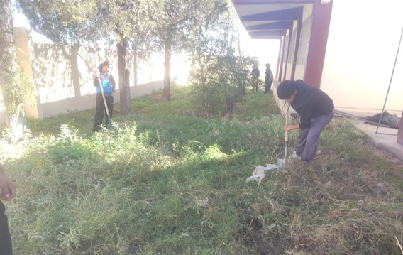
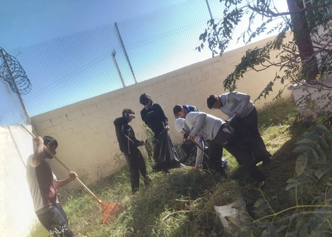
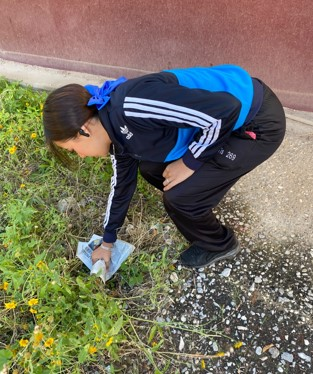

En nuestra escuela, el CBTIS 269, se generan diferentes tipos de residuos debido a las
actividades que realizan diariamente los estudiantes, maestros y personal administrativo.
Entre los más comunes se encuentran las botellas de plástico, envolturas de alimentos, bolsas,
latas de aluminio, hojas de papel, cartón, vasos desechables y restos de comida. También se
producen residuos como servilletas, empaques de productos y materiales escolares que ya no se
utilizan. Muchos de estos residuos pueden separarse y aprovecharse mediante el reciclaje para
disminuir la contaminación dentro de la institución.

La basura suele acumularse principalmente en los patios, pasillos, salones de clases, áreas
de descanso y alrededores de la cafetería, debido a que son lugares donde los estudiantes
pasan gran parte de su tiempo y consumen alimentos y bebidas. También puede encontrarse
basura cerca de las canchas y en los espacios donde se reúnen los alumnos durante el receso.
Por esta razón, es importante utilizar correctamente los botes de basura y evitar dejar
residuos en el suelo.

Uno de los principales problemas relacionados con los residuos en nuestra escuela es la
falta de separación adecuada de la basura, ya que muchos materiales reciclables terminan
mezclados con los desechos orgánicos y otros residuos. También puede existir el problema
de que algunos estudiantes no depositan la basura en los contenedores correspondientes,
lo que provoca suciedad en los patios y pasillos, malos olores y una mala imagen de la
institución. Además, la acumulación de residuos puede atraer insectos y afectar la limpieza
de los espacios escolares. Para solucionar estos problemas es necesario fomentar la cultura
del reciclaje, colocar más contenedores de separación y realizar campañas de limpieza y
concientización.
